Heart Attack Prediction
Overview
This project develops a predictive model to flag individuals at elevated risk of heart attack, combining machine learning with interpretable analytics so results are useful for screening, prevention, and clinical decision support. We focus on identifying which clinical, lifestyle, and demographic factors most influence risk, and on calibrating the model’s precision and recall to be reliable for real-world use.
Why this matters
- Heart disease is a leading cause of death worldwide (18M+ deaths annually).
- In the U.S., someone has a heart attack every ~40 seconds, and over 50% report no prior symptoms.
- The economic burden exceeds $200B annually.
Who benefits
- Patients: personalized risk scores and driver explanations to guide lifestyle changes, medication adherence, and timely medical follow-up.
- Clinicians: an evidence-based complement to clinical judgment that helps prioritize care and manage panels efficiently.
- Policymakers & health systems: population-level insights to target prevention programs and reduce cardiovascular burden.
Research questions
- Which factors most strongly influence heart-attack risk in our data?
- What precision/recall balance makes the model dependable for screening and referral?
- How can insights translate into preventive actions for patients (e.g., lifestyle changes, adherence)?
Problem statement
Cardiovascular disease is a leading cause of death, and many heart attacks occur without prior symptoms. Screening resources are limited, and risk is often underestimated until it is too late. Patients need clear, interpretable feedback they can act on, and clinicians need a reliable way to identify elevated risk earlier and prioritize preventive care. The core problem is to build a model that estimates individual heart-attack risk from routinely available data and explains why a person is high risk in time to intervene.
Our objectives are to predict near-term heart-attack risk at the individual level, explain the top risk drivers in language patients and clinicians understand, and calibrate precision and recall so the model is safe for screening (high recall) and practical for follow-up (adequate precision). The scope includes clinical, lifestyle, and demographic inputs commonly captured in care or surveys, and concise contributing factors. We must handle class imbalance and missing data while maintaining interpretability and fairness across subgroups.
Success will be defined by meeting agreed performance thresholds (e.g., strong AUROC and PR-AUC) and an operational precision/recall target set with clinical stakeholders. We will also look for stable performance across age and sex subgroups, documented bias checks, and explanation quality that clinicians rate as useful for counseling and care planning.
Data
The dataset comes from a dataset named “Heart Attack Risk Prediction Dataset” from Kaggle. This dataset is designed to analyze and predict heart attack risk based on various health, lifestyle, and demographic factors. It includes attributes such as age, cholesterol levels, blood pressure, smoking habits, exercise patterns, dietary preferences, and medical history. By leveraging predictive analytics and machine learning, this dataset can aid researchers and healthcare professionals in developing proactive strategies for heart disease prevention and management. .
Snapshot
Rows: 8,763
Columns: 26
Target variable: Heart_Attack_Risk (binary: 1 = At Risk, 0 = No Risk)
Predictors: the modeling dataset includes 24 features across demographics, clinical/physiologic measures, medical history, and lifestyle—with Patient ID excluded from the final set
Data Dictionary
| Feature | Type | Description |
|---|---|---|
Patient ID
|
QL(Unique) | Unique identifier for each patient |
Age
|
Q(Int) | Age in years |
Sex
|
QL(2) | Male or Female |
Cholesterol
|
Q(Int) | Total cholesterol (mg/dL) |
Blood Pressure
|
QL(2) | Systolic / Diastolic (mmHg) |
Heart Rate
|
Q(Int) | Resting heart rate (bpm) |
Diabetes
|
QL(Bin) | Diabetes status (Yes/No) |
Family History
|
QL(Bin) | Family history of heart problems (1 Yes / 0 No) |
Smoking
|
QL(Bin) | Smoking status (1 Smoker / 0 Non-smoker) |
Obesity
|
QL(Bin) | Obesity status (1 Obese / 0 Not obese) |
Alcohol Consumption
|
QL(4) | None / Light / Moderate / Heavy |
Exercise Hours Per Week
|
Q(Real) | Hours of exercise per week |
Diet
|
QL(3) | Diet quality (Healthy / Average / Unhealthy) |
Previous Heart Problems
|
QL(Bin) | Prior heart-related issues (1 Yes / 0 No) |
Medication Use
|
QL(Bin) | Takes medication (1 Yes / 0 No) |
Stress Level
|
Q(Int) | Self-reported stress (1–10) |
Sedentary Hours Per Day
|
Q(Real) | Average sedentary hours per day |
Income
|
Q(Real) | Income level |
BMI
|
Q(Real) | Body Mass Index |
Triglycerides
|
Q(Int) | Triglycerides (mg/dL) |
Physical Activity Days Per Week
|
Q(Int) | Days with physical activity (per week) |
Sleep Hours Per Day
|
Q(Real) | Average sleep hours per day |
Country
|
QL(N) | Country of residence |
Continent
|
QL(7) | Continent of residence |
Hemisphere
|
QL(2) | Northern / Southern |
Heart Attack Risk
|
QL(Bin) | Target label (1 Yes / 0 No) |
Notation used
Q(Int) = Quantitative (Integer)
Q(Real) = Quantitative (Real)
QL(Bin) = Qualitative (Binary)
QL(N) = Qualitative (Categorical) with N levels
Data Preprocessing
- Columns
- Drop
Patient.ID - Move
Heart.Attack.Riskto the first column
- Drop
- Missing values and outliers
- Checked with a z-score screen
- None detected (no imputation or trimming applied)
- Checked with a z-score screen
- Blood pressure parsing
- Split
Blood.PressureintoSystolicandDiastolic
- Example:
158/88→Systolic = 158,Diastolic = 88
- Split
- Encode categorical variables
- Binary to 0/1
Sex→Female(1 = Female, 0 = Male)Hemisphere→Northern.Hemisphere(1 = Northern, 0 = Southern)- Others were kept in numeric form when building a correlation matrix before being converted to factors for training models
- Multi-category (one-hot dummies)
- Created dummies for
Diet,Country,Continent - Converted to numeric first when building a correlation matrix
- Converted to factors and finally dummies for training models
- Created dummies for
- Binary to 0/1
- Scale numeric features
- Standardize all numeric predictors to mean = 0 and standard deviation = 1
Dataset versions and splits
Two final clean datasets (same row split, different handling of multi-category variables)
- data: 26 columns, multi-category variables kept as factors
- data1: 52 columns, multi-category variables dummy-encoded
| Dataset | Columns | Total rows | Train rows | Test rows |
|---|---|---|---|---|
data
|
26 | 8,763 | 3,138 | 4,382 |
data1
|
52 | 8,763 | 3,138 | 4,382 |
Which dataset for which models
- Numeric-only algorithms: use data1 (dummy-encoded) — e.g., k-NN, SVM
- Models that accept factors in our toolchain: use data (factor-based) — e.g., Logistic Regression, Naive Bayes, Decision Tree, Random Forest (Using factors also yields clearer tree visualizations.)
Class distribution strategy
- Original distribution: ~36% “At risk”, ~64% “No risk”
- Test set (stratified): kept the original distribution (~36/64) to reflect real world prevalence
- Training set (balanced): adjusted to 50% / 50% (“At risk” / “No risk”) to reduce class-imbalance bias during learning
Notes
- Both datasets share the same train/test split, ensuring fair model comparisons.
- “Balanced” training was achieved by resampling so each class contributes equally.
Exploratory Data Analysis
Descriptive Analysis
Heart Attack Risk by Country
This chart shows the proportion of people labeled At Risk vs No Risk for heart attack in each country.
The overall pattern is very similar across countries: most countries have an at-risk share of roughly one third.
This suggests that risk is widespread and not driven by a single country in the dataset.
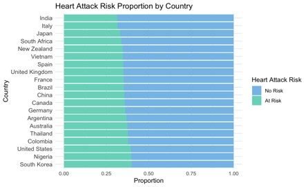
Distribution of At-Risk Patients by Age
This plot shows how many At Risk cases appear at different ages.
Risk is not just concentrated in older adults — there are many at-risk individuals starting in their mid 20s and continuing through the 60s, 70s, and 80s.
That means elevated risk appears across the full adult age range.
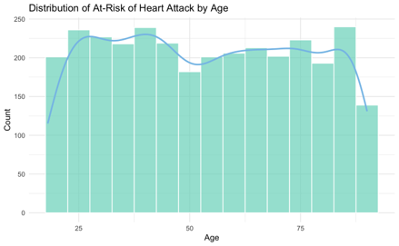
Heart Attack Risk by Gender
The share of people labeled At Risk is very similar between males and females.
In this dataset, baseline heart attack risk looks fairly balanced across gender, with no large gap in proportions.
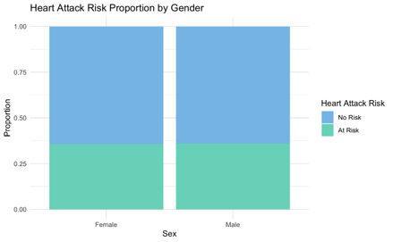
Correlation Analysis
Correlation with Demographics
This correlation matrix looks at how Heart.Attack.Risk relates to demographic features such as Sex, Age, Income, Country, Continent, and Hemisphere.
All the correlation values with Heart.Attack.Risk are very close to zero, which means there is no strong linear relationship between risk and any single demographic or location variable in this dataset. This suggests that heart attack risk is not being driven by demographic alone, and likely depends more on clinical and lifestyle factors than on where someone lives.
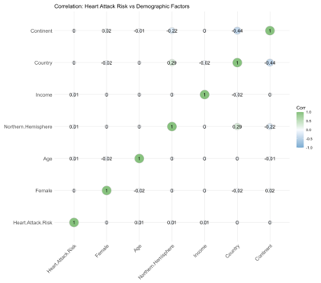
Correlation with Physiological and Clinical Variables
This correlation matrix shows how Heart.Attack.Risk relates to physiological and clinical measures such as Cholesterol, Systolic and Diastolic blood pressure, Triglycerides, Heart.Rate, and BMI.
The strongest positive correlations appear between Cholesterol and risk, and between Systolic blood pressure and risk.
This suggests that higher cholesterol levels and higher systolic pressure are more associated with being labeled “At Risk” in this dataset, while the other variables have weaker or near-zero relationships.
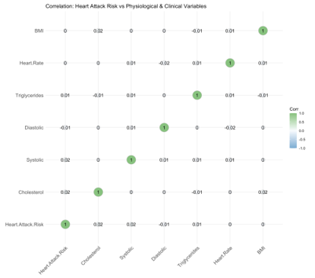
Correlation with Medical History
This correlation matrix looks at how Heart.Attack.Risk relates to medical history factors such as Diabetes, Family.History, Previous.Heart.Problems, Medication.Use, and Stress.Level.
The strongest positive correlation with being “At Risk” is Diabetes, suggesting that a history of diabetes is an important signal for elevated heart attack risk in this dataset.
Other history variables show weaker or near-zero direct correlations.
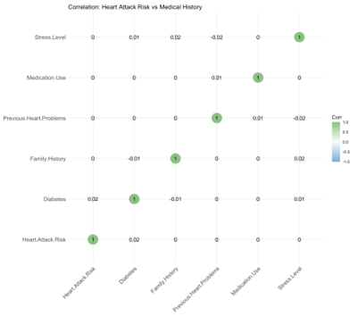
Correlation with Lifestyle Factors
This correlation matrix shows how Heart.Attack.Risk relates to lifestyle factors such as Smoking, Alcohol.Consumption, Diet, Exercise.Hours.Per.Week, Physical.Activity.Days.Per.Week, Sedentary.Hours.Per.Day, and Sleep.Hours.Per.Day.
The strongest relationship we see is a negative correlation between Sleep.Hours.Per.Day and heart attack risk, suggesting that fewer hours of sleep per day is associated with higher risk.
Other lifestyle variables, including smoking and alcohol use, have weaker direct correlations in this dataset.
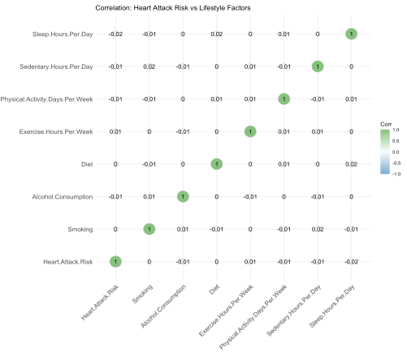
Tools
Modeling and data: R
Visualization and reporting: Tableau
Methods and Approach
To predict heart attack risk, we trained and compared six different classification models.
Our goal was to identify the model that performs best on unseen data while staying clinically interpretable.
We evaluated each model primarily on test accuracy, using the same train/test split strategy described above.
Models evaluated
1. Logistic Regression
A linear, probability-based classifier. It estimates the chance that a patient is “At Risk” given their features.
Strengths: simple, interpretable, easy to explain to clinicians.
Limitation: assumes a mostly linear relationship between predictors and risk.
2. Naive Bayes
A probabilistic classifier that uses Bayes’ rule to estimate how likely each class is, given the input features. It assumes the features are conditionally independent once you know the class, which keeps the math very simple and fast.
Strengths: works well on high-dimensional data, easy to train, very fast, and often surprisingly strong even with limited data.
Limitation: the independence assumption is usually not true in real data, so performance can drop when features are strongly correlated.
3. k-Nearest Neighbors (k-NN)
A distance-based model. For a new patient, it looks at the most similar patients in the training set and votes.
Strengths: non-parametric, can capture local patterns.
Limitations: can be memory-intensive and sensitive to scaling; performance drops in high dimensions if features are noisy.
4. Decision Tree
A rule-based model that splits patients into groups using yes/no questions (for example, “Is systolic > X?”).
Strengths: highly interpretable, mirrors clinical reasoning.
Limitation: can overfit if not pruned.
5. Random Forest
An ensemble of many decision trees that vote together.
Strengths: higher accuracy and more stability than a single tree; reduces overfitting.
Limitation: less interpretable than a single tree, but still allows feature importance analysis.
6. Support Vector Machine (SVM)
Finds the best separating boundary (hyperplane) between “At Risk” and “No Risk,” and can use kernels to handle non-linear boundaries.
Strengths: strong performance in high-dimensional feature spaces.
Limitation: less intuitive to explain clinically compared to logistic regression or trees.
Model selection
Each model was trained on the balanced training set and tested on the realistic test set (with the original class ratio).
We compared their test accuracy side by side to understand which approach generalizes best.
That final comparison guides which model is most promising for deployment and clinical interpretation.
Model results and selection
Trained on Worldwide Data
We trained all six models (Logistic Regression, Naive Bayes, k-NN, Decision Tree, Random Forest, and SVM) on our processed training data and then evaluated them on the held-out test set.
Our main comparison metric was test accuracy, using the same train/test split strategy described earlier.
| Model | Test Accuracy |
|---|---|
| Logistic Regression | 55% |
| Naive Bayes | 50% |
| k-NN | 51.67% |
| Decision Tree | 51.32% |
| Random Forest | 51.37% |
| SVM (Support Vector Machine) | 64.23% |
1. Logistic Regression
How we built the model
Start with all features
We first fit a full logistic regression model ondata.trainusing every available predictor.Select the most important predictors
We ran stepwise feature selection (AIC-based StepAIC). This procedure automatically adds and removes variables to find the smallest set of predictors that still explains the outcome well.Keep only the best predictors
After selection, we kept only the strongest variables for heart attack risk. The final model focused on:- Cholesterol
- Heart.Rate
- Triglycerides
- Systolic (systolic blood pressure)
- Northern.Hemisphere
Standardize numeric features
We created a scaled copy of the training data and standardized all numeric predictors (mean = 0, SD = 1). This helps the model stay stable and makes the coefficients more comparable.Refit the final model
We retrained logistic regression using only the selected predictors and the standardized data.
| Train Accuracy | Test Accuracy | |
|---|---|---|
| Logistic Regression | 55% | 50% |
2. Naive Bayes
How we built the model
- We trained a Naive Bayes classifier on the original dataset using only the variables that showed the strongest correlation with heart attack risk:
- Cholesterol
- Heart.Rate
- Triglycerides
- Systolic (systolic blood pressure)
- Northern.Hemisphere
- We focused on these features to reduce noise and keep only the most informative predictors.
Naive Bayes assumes that the input features are conditionally independent given the class label.
This makes it very fast to train and easy to interpret.
| Train Accuracy | Test Accuracy | |
|---|---|---|
| Naive Bayes | 55% | 50% |
3. k-Nearest Neighbors (k-NN)
How we built the model
- We treated k-NN as a distance-based classifier: a new patient is labeled based on the most similar patients in the training set.
- We prepared the data using feature normalization, since k-NN is sensitive to scale:
- First tried Min-Max normalization, which gave ~50.4% accuracy.
- Then used Z-score standardization (mean = 0, std = 1), which improved performance to ~51.7%.
- We tuned the model by testing multiple values of k (the number of neighbors), using odd values from 1 to 99.
- We selected the best k based on the lowest test error.
| Train Accuracy | Test Accuracy | |
|---|---|---|
| KNN | 56% | 51% |
4. Decision Tree
How we built the model
- We trained a classification tree using Heart.Attack.Ris as the target.
- We used rpart() to grow the full tree on the training data.
- We then used cross-validation to find the best cp (complexity parameter), which helps control overfitting.
- After selecting the optimal cp, we pruned the tree using prune() to keep only the most useful splits.
- Finally, we predicted on both the training set and the test set, and calculated confusion matrices and accuracy.
| Train Accuracy | Test Accuracy | |
|---|---|---|
| Decision Tree | 68% | 64% |
5. Random Forest
How we built the model
- We first fit a Random Forest on the full training dataset using all available predictors.
- We then looked at the model’s feature importance to see which variables contributed most to predicting heart attack risk.
- We performed hyperparameter tuning on
mtry(the number of variables randomly selected at each split).- We chose the
mtryvalue that produced the lowest out-of-bag (OOB) error.
- The best setting was mtry = 3.
- We chose the
- Finally, we retrained the Random Forest using the most important features and the best
mtry.
| Train Accuracy | Test Accuracy | |
|---|---|---|
| Random Forest | 100% | 52% |
6. Support Vector Machine (SVM)
How we built the model
- We prepared the input data for SVM by:
- Converting all binary variables to factors
- Standardizing numeric features using
scale()so they are on a comparable range
- We treated SVM as a margin-based classifier: it tries to find the best separating boundary between “At Risk” and “No Risk.”
Hyperparameter tuning
- We tuned the model using a radial (RBF-style) kernel.
- We searched over:
- gamma values: 0.5, 1, 2, 5
- cost values: 0.01, 0.1, 1
- gamma values: 0.5, 1, 2, 5
- We selected the setting that produced the best validation accuracy.
- Best model:
kernel = "radial",gamma = 5,cost = 0.01
| Train Accuracy | Test Accuracy | |
|---|---|---|
| Random Forest | 67% | 64% |
Trained on Subset data
Because most of our full-population models had only moderate accuracy, we tested the idea that heart attack risk may behave differently by country. Some factors (diet, access to care, lifestyle, environment) are country-specific, so a single global model might be averaging over very different patterns.
We first identified countries with stronger correlation signals for heart attack risk in our data and selected four of them: Italy, Japan, United States, and China. Then we created country-specific subsets using the following process:
- Filter the training and test sets (
data1.train/data1.test) to keep only rows from one country at a time. - Remove dummy columns that are all zeros within that country (for example, other country indicators that no longer apply).
- Retrain and evaluate all six models separately for each country.
Best performance by country – KNN
Among the models we re-ran on each country subset, k-NN performed best overall. Below are the k-NN test accuracies for each country:
| Country | K value | Test Accuracy (k-NN) |
|---|---|---|
| Italy | 89 | 68% |
| Japan | 7 | 66% |
| United States | 79 | 49% |
| China | 1 | 48% |
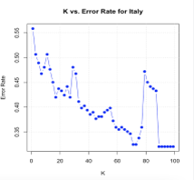 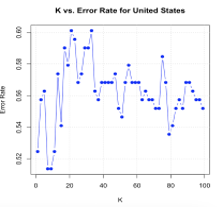 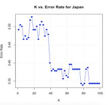 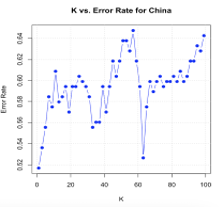
Country-specific risk drivers
After training k-NN separately on each country, we looked at which features were most influential for predicting heart attack risk in that country.
The lists below show the top three factors for each country, along with the direction of the relationship:
- Positive value (+) → higher value is associated with higher predicted risk
- Negative value (–) → higher value is associated with lower predicted risk / protective effect
United States
- Physical.Activity.Days.Per.Week (−0.1806)
- Systolic.Blood.Pressure (+0.1449)
- Income (−0.0952)
Interpretation: Lower physical activity and higher systolic blood pressure are linked to higher risk. Income also appears in the model, suggesting social/economic factors may play a role.
Italy
- BMI (+0.1694)
- Previous.Heart.Problems (−0.1424)
- Income (+0.0942)
Interpretation: Higher BMI is associated with elevated risk. Prior heart problems still matter, but the negative sign suggests the way it’s encoded in this subset may reflect treated/managed cases.
Japan
- Previous.Heart.Problems (−0.3429)
- Heart.Rate (+0.1970)
- Unhealthy.Diet (−0.1574)
Interpretation: Elevated heart rate shows up as a strong risk indicator. Diet pattern also contributes to the model’s decision.
China
- Stress.Level (−0.1589)
- Triglycerides (+0.1219)
- Cholesterol (+0.1023)
Interpretation: Blood lipid measures (triglycerides, cholesterol) are important risk signals. Stress also appears in the model for this population.
Conclusion
Our models suggest that predicting heart attack risk is possible, but still challenging with the data we have.
At the global level, the Support Vector Machine (SVM) was the top-performing model, reaching about 64% test accuracy. While this was higher than Logistic Regression, Random Forest, k-NN, and others on the full dataset, 64% is not strong enough for confident clinical use. In other words, the model can see some signal, but it is not yet reliable as a real-world screening tool.
However, when we looked at specific countries instead of the entire population, we saw more promising results. After subsetting data for four higher-signal countries (Italy, Japan, United States, China), we retrained models within each country. In those country-specific tests, k-NN performed best, especially in Italy (68% accuracy) and Japan (66% accuracy). This suggests that heart attack risk drivers may be more consistent within a single country than across the world — lifestyle patterns, healthcare access, and physiology may interact differently by region.
We also examined the top factors associated with predicted risk in each country.
- In Italy, the most important signals pointed toward BMI / obesity, income level, and history of heart problems, which suggests prevention could focus on weight management, access for lower-income groups, and follow-up care for previously high-risk patients.
- In Japan, key drivers included heart rate, diet quality, and history of heart issues, which points toward monitoring cardiovascular stress, improving diet, and providing targeted care to known high-risk individuals.
These country-level insights are useful because they hint that intervention strategies may need to be localized, not one-size-fits-all.
Limitations
A few technical observations:
k-NN did well on country-level subsets because it makes very few assumptions about the shape of the data. k-NN is a local, distance-based model — it can adapt to non-linear boundaries and cluster-like patterns. That’s helpful when risk depends on subtle combinations of lifestyle and clinical variables that vary by population.
Tree-based models behaved oddly.
Our Random Forest reached 100% training accuracy but only about 52% test accuracy, which is a clear sign of overfitting. Even after tuning (e.g. choosing the bestmtry), the model still memorized the training data more than it generalized. This likely reflects limitations in the dataset: synthetic or AI-generated structure, small effective sample size within subgroups, and noisy relationships between predictors and the target.Logistic Regression and Naive Bayes stayed around ~50–55% accuracy on the test set. They were stable (little overfitting), but they couldn’t capture enough complexity to make strong predictions at the global scale.
Data limitation:
Data quality and source.
The dataset appears to be AI-generated / synthetic rather than clinical-grade EHR data. That means the relationships may not fully reflect real-world physiology, access to care, or reporting patterns.
Sample size within subgroups.
Once we subset by country, the number of usable rows per country dropped. That makes the models more sensitive to noise and increases the risk that the learned “signals” are unstable.
Generalizability.
Even our best models (k-NN in Italy and Japan) still sit in the 60–70% accuracy range. These are promising for research but not medically actionable without further validation.
Business Implication
Our project suggests a practical way for healthcare organizations, insurers, and even employers to act before a heart attack happens instead of after. Rather than trying to use one global risk model for everyone, the results point toward building local models for specific populations (for example, by country or region) and using those models to flag people who are more likely to be at risk. Even if the model isn’t perfect, that early signal can be used to offer preventive outreach, coaching, screenings, or follow-up care to the right groups before an emergency occurs. That can mean better outcomes for patients, less strain on the healthcare system, and lower costs from avoidable cardiac events.
Next steps
Get better data.
Collect larger, real-world health data (vitals, labs, reported behavior, history) from multiple populations. Ideally, include clinical labels confirmed by diagnosis.Expand geographic coverage.
Build and evaluate localized models for more countries and regions to see where population-specific risk modeling is strongest.Improve model tuning.
Explore more systematic hyperparameter search (especially for SVM and Random Forest) and fairness / bias checks across demographic groups.Move beyond accuracy.
For real screening, we also care about recall (catching high-risk patients) and precision (avoiding false alarms). A model doesn’t need to be perfect to be useful — it needs to be good at prioritizing who should get follow-up.
Bottom line:
A single global model struggled to capture heart attack risk reliably. But when we narrowed the problem to specific countries, accuracy improved and meaningful local risk drivers emerged. That suggests the path forward is not “one model for everyone,” but rather population-aware models + targeted prevention strategies.
Links
Dataset Source:
Heart Attack Risk Prediction Dataset on Kaggle